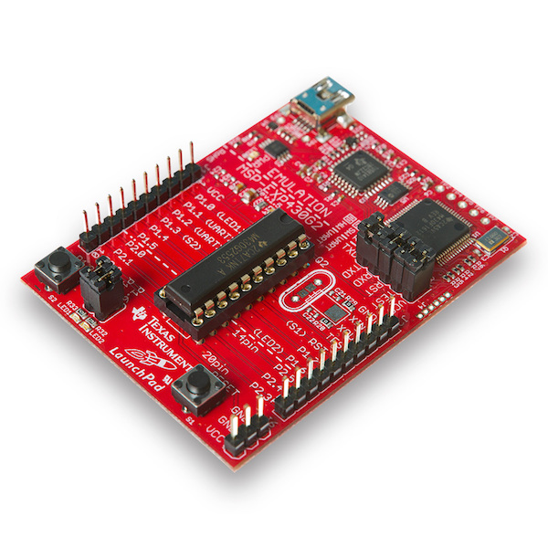

HC-05 产品参数
1、PCB 尺寸：37.3mm * 15.5mm
2、重量：3.5g
3、输入电压：3.6 - 6V，电源自带反接，反接不工作。
4、引出 6 个引脚：EN/VCC/GND/RX/TX/STATE（STATE：蓝牙状态引脚，未连接输出低电平，连接后输出高电平）
5、带连接指示灯。LED 快闪表示没有蓝牙连接；LED 慢闪表示进入 AT 命令模式。
6、板载 3.3V ，可以直接连接单片机（Arduino/C51/AVR/ARM/MSP430等），5V 单片机可以直接连接。
7、正常情况下，蓝牙模块的通信距离是10M左右。
8、按下按键再给蓝牙模块通电可以进入 AT 模式，设置参数和查询信息。
9、可以通过 AT 命令切换主机和从机模式。
10、模块默认波特率为9600、默认配对密码为 1234 或 0000 、默认名称 HC-05、LED状态灯开启。
11、根据苹果通信协议，iPhone 系列设备可能不支持HC05模块。
HC-05 模块实物图
HC-05 模块原理图
MSP430G2553 实物图

MSP430G2553 引脚图
接线方式
VCC（+5 V）：接电源正极（+5 V）
GND：接电源负极（GND）
RX：接收端，蓝牙模块接收从其它设备发来的数据；正常情况下，连接其它设备的发送端 TX。
TX：发送端，蓝牙模块发送数据给其它设备；正常情况下，连接其它设备的接受端RX。
EN：使能端。
Tips:
RXD(Receive Data)
TXD(Transmit Data)
MSP430G2553 的数据发送端（TX）位于 P1.1、数据接收端（RX）位于 P1.2。
官方代码参考
#include <msp430.h>
//------------------------------------------------------------------------------
// Hardware-related definitions
//------------------------------------------------------------------------------
#define UART_TXD 0x02 // TXD on P1.1 (Timer0_A.OUT0)
#define UART_RXD 0x04 // RXD on P1.2 (Timer0_A.CCI1A)
//------------------------------------------------------------------------------
// Conditions for 9600 Baud SW UART, SMCLK = 1MHz
//------------------------------------------------------------------------------
#define UART_TBIT_DIV_2 (1000000 / (9600 * 2))
#define UART_TBIT (1000000 / 9600)
//------------------------------------------------------------------------------
// Global variables used for full-duplex UART communication
//------------------------------------------------------------------------------
unsigned int txData; // UART internal variable for TX
unsigned char rxBuffer; // Received UART character
//------------------------------------------------------------------------------
// Function prototypes
//------------------------------------------------------------------------------
void TimerA_UART_init(void);
void TimerA_UART_tx(unsigned char byte);
void TimerA_UART_print(char *string);
//------------------------------------------------------------------------------
// main()
//------------------------------------------------------------------------------
int main(void)
{
WDTCTL = WDTPW + WDTHOLD; // Stop watchdog timer
if (CALBC1_1MHZ==0xFF) // If calibration constant erased
{
while(1); // do not load, trap CPU!!
}
DCOCTL = 0; // Select lowest DCOx and MODx settings
BCSCTL1 = CALBC1_1MHZ; // Set DCOCLK to 1MHz
DCOCTL = CALDCO_1MHZ;
P1OUT = 0x00; // Initialize all GPIO
P1SEL = UART_TXD + UART_RXD; // Timer function for TXD/RXD pins
P1DIR = 0xFF & ~UART_RXD; // Set all pins but RXD to output
__enable_interrupt();
TimerA_UART_init(); // Start Timer_A UART
TimerA_UART_print("READY.");
for (;;)
{
// Wait for incoming character
__bis_SR_register(LPM0_bits);
// Update board outputs according to received byte
if (rxBuffer & 0x01) P1OUT ^= 0x01; else P1OUT &= ~0x01; // P1.0
// Echo received character
TimerA_UART_tx(rxBuffer);
}
}
//------------------------------------------------------------------------------
// Function configures Timer_A for full-duplex UART operation
//------------------------------------------------------------------------------
void TimerA_UART_init(void)
{
TACCTL0 = OUT; // Set TXD Idle as Mark = '1'
TACCTL1 = SCS + CM1 + CAP + CCIE; // Sync, Neg Edge, Capture, Int
TACTL = TASSEL_2 + MC_2; // SMCLK, start in continuous mode
}
//------------------------------------------------------------------------------
// Outputs one byte using the Timer_A UART
//------------------------------------------------------------------------------
void TimerA_UART_tx(unsigned char byte)
{
while (TACCTL0 & CCIE); // Ensure last char got TX'd
TACCR0 = TAR; // Current state of TA counter
TACCR0 += UART_TBIT; // One bit time till first bit
TACCTL0 = OUTMOD0 + CCIE; // Set TXD on EQU0, Int
txData = byte; // Load global variable
txData |= 0x100; // Add mark stop bit to TXData
txData <<= 1; // Add space start bit
}
//------------------------------------------------------------------------------
// Prints a string over using the Timer_A UART
//------------------------------------------------------------------------------
void TimerA_UART_print(char *string)
{
while (*string) {
TimerA_UART_tx(*string++);
}
}
//------------------------------------------------------------------------------
// Timer_A UART - Transmit Interrupt Handler
//------------------------------------------------------------------------------
#pragma vector = TIMER0_A0_VECTOR
__interrupt void Timer_A0_ISR(void)
{
static unsigned char txBitCnt = 10;
TACCR0 += UART_TBIT; // Add Offset to CCRx
if (txBitCnt == 0) { // All bits TXed?
TACCTL0 &= ~CCIE; // All bits TXed, disable interrupt
txBitCnt = 10; // Re-load bit counter
}
else {
if (txData & 0x01) {
TACCTL0 &= ~OUTMOD2; // TX Mark '1'
}
else {
TACCTL0 |= OUTMOD2; // TX Space '0'
}
txData >>= 1;
txBitCnt--;
}
}
//------------------------------------------------------------------------------
// Timer_A UART - Receive Interrupt Handler
//------------------------------------------------------------------------------
#pragma vector = TIMER0_A1_VECTOR
__interrupt void Timer_A1_ISR(void)
{
static unsigned char rxBitCnt = 8;
static unsigned char rxData = 0;
switch (__even_in_range(TA0IV, TA0IV_TAIFG)) { // Use calculated branching
case TA0IV_TACCR1: // TACCR1 CCIFG - UART RX
TACCR1 += UART_TBIT; // Add Offset to CCRx
if (TACCTL1 & CAP) { // Capture mode = start bit edge
TACCTL1 &= ~CAP; // Switch capture to compare mode
TACCR1 += UART_TBIT_DIV_2; // Point CCRx to middle of D0
}
else {
rxData >>= 1;
if (TACCTL1 & SCCI) { // Get bit waiting in receive latch
rxData |= 0x80;
}
rxBitCnt--;
if (rxBitCnt == 0) { // All bits RXed?
rxBuffer = rxData; // Store in global variable
rxBitCnt = 8; // Re-load bit counter
TACCTL1 |= CAP; // Switch compare to capture mode
__bic_SR_register_on_exit(LPM0_bits); // Clear LPM0 bits from 0(SR)
}
}
break;
}
}
//------------------------------------------------------------------------------
使用说明
首先将 HC-05 与 MSP430G2553 正确连接连接，HC-05 上的 LED 快闪说明没有设备连接；打开手机蓝牙，查找设备，与查询列表中的 HC-05 进行配对，（默认配对密码为 1234 或 0000 ），HC-05 上的 LED 慢闪说明配对完成，设备成功连接。
使用 IAR 进行程序下载，步骤可以参照[IAR Embedded Workbench 基本使用]。
手机应用商城搜索 「蓝牙串口」，并进行下载。
打开蓝牙串口工具，右上角点击「连接」，与 HC-05 连接成功后，手机可以接收到 HC-05 发送的 「READ.」，按照程序 if (rxBuffer & 0x01) P1OUT ^= 0x01; else P1OUT &= ~0x01; // P1.0 此时在手机端发送1，即可点亮 MSP430G2553 的 P1.0 口的 LED。
依照此基本程序可以实现手机蓝牙与单片机的通信。手机遥控车，控制单片机开／关空调，等等，都基于此。
资料下载
MSP430G2553 官方数据手册
MSP430G2x53, MSP430G2x33, MSP430G2x13, MSP430G2x03 Code Examples 官方参考程序
MSP430G2553 ——HC-05 源程序
HC-05 蓝牙模块原理图
HC-05 AT指令集
链接:https://pan.baidu.com/s/1iWQ1OlvuvIcN3NSkgQEdMg
密码:st5t